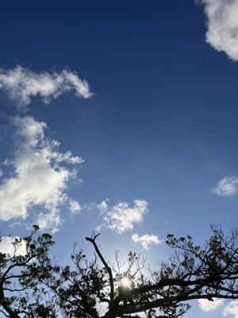
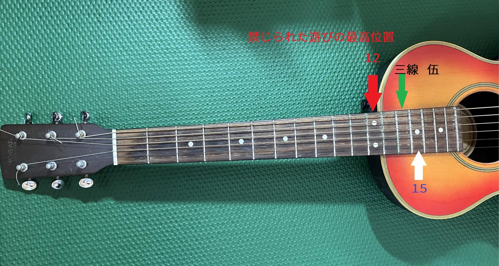
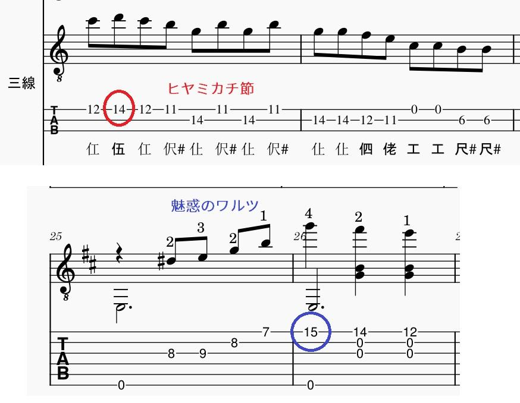
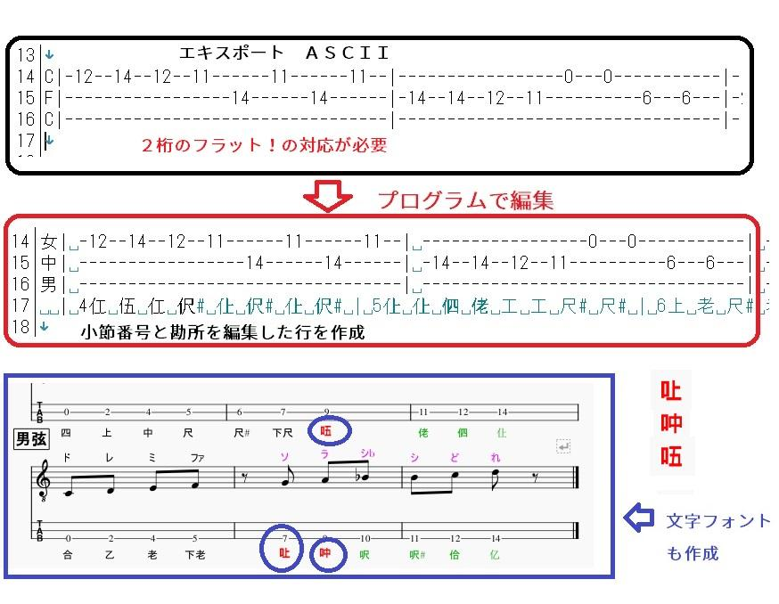

うるがいの話 ある日
最新: アルゴリズム【うるがいの話 ある日】とは 一日だけのプログです
『うるがいの話』の最新一日だけのプログで、通信料が少なく経済的だ。カニの画像をクリックすると全ての日付が載る『うるがいの話』サイトを表示します
|
|
【うるがいの話】 うるがい(ｳﾙｶﾞｲ urugai)とは、『もずくがに』の名前でとても大きくなります。 |
|---|---|
|
|
【カミマヤーの話】 猫のことを方言でマヤーといいます。カミマヤー（kamimayaa）とは、神の猫のことです。 |
|
【たながぁの音楽】 たながぁ（ﾀﾅｶﾞｰ tanagaa）とは手長えびのことで、何種類かあり大きいのは車 エビぐらいになります。 |

|
【ぶながぁの話】 ぶながぁ(ﾌﾞﾅｶﾞｰ bunagaa)とは、赤い髪の毛、赤い身体、そして身長は１ｍ２０ｃｍ ぐらい、川の蟹を食べているの目撃された。場所は沖縄県国頭郡大宜味村のと ある村僕の隣近所に住んでいる爺さんから、聞いた話です。 |
|
|
【ギーマの話】 ギーマ(giima)とは、山原の里山に咲くスズランに似た、 花を付けます。実は食べられます、 気が付くと口の周りが紫になっています。 |
2024年08月02日 (金）アルゴリズム
15:56

今日の新聞でイセエビ漁の解禁が始まったとあった。フムフム、４月から７
月までの泊魚市の水槽にあったイセエビやセミエビは・・・（４月から７月
末まで、県内全域でイセエビ類とセミエビ類の採捕を禁止している）。
ガソリンの給油でお釣りとしての千円に新札が、含まれていた。ヨメに報告
したら、没収された（補充なしで）。
「アルゴリズム」というのは、コンピューターで計算を行うときの「計算方
法」のことなんですが、広く考えれば、何か物事を行うときの「やり方」の
ことだと言っていいでしょう。
『ヒヤミカチ節』の楽譜を編集するとギターのフタット１４に位置する弦を
押さえる勘所がある。ギターで日々練習している『魅惑のワルツ』の１５に
ほぼ一緒である（ちなみに一応弾けますよ）。

なってこった、タブ譜のテキストを入力して勘所を出力する真珠のプログラ
ムは、フラットは１桁までなのに・・・。仕方ないと、２桁のアルゴリズム
も考える。二日かかりで完成（フムフム、腕はまだまだ現役か）

三味線の全ての勘所を調べていると、口へんに上、中、五などフォントが無
い漢字見たいものがある（調べた、漢字でない！）。仕方ない、フォントを
作るかと、これまた２日かけて完成。・・・しかしだ、この３つの勘所利用
しなかった、おそらく今後もないであろうとネットで書いてあった。くやし
いので、『三線の勘所と五線譜』とユーチューブ動画がアップする。

１５時４３分 ビットコインの総資産 ￥２７、７６９（↓６６７）